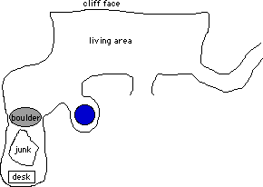

Chapter 3: The Bigger They Are
"So Grunther, did you know Phallus, err, Falon?" -- Kurik
 nly the tunnel remained to be explored, the rest of the manor house having been
thoroughly searched. No sign of Desatysso had been discovered, and from the
disastrous condition of the keep it was apparent that none save giants had
lived there for many years.
nly the tunnel remained to be explored, the rest of the manor house having been
thoroughly searched. No sign of Desatysso had been discovered, and from the
disastrous condition of the keep it was apparent that none save giants had
lived there for many years.
Rosvenir's Presence spell detected only the fire elemental within its 250 foot
radius, the remaining giants having fled via the tunnel. Skilled adventurers
all, the party expected that a boulder would at some point be sent rolling down
the tunnel at them and determined to take precautions against it. Mystical kept
a Stonewall spell ready to block or deflect such a thing, and everyone
was turned invisible in the hopes they could catch their opponents unaware.
Haer kept an eye out for traps or trigger mechanisms during the
ascent. Quite an ascent it was, too. The tunnel curved into a spiral, rising at
nearly 45 degrees in places. Lacking references it was easy to become
disoriented. After what seemed like days, but had more likely been only hours,
by best estimates they had climbed fourteen loops in the spiral and were now
about seven hundred feet above the valley floor. Finding a relatively flat area
the group determined to rest, having constantly exerted themselves in combat or
climbing for long enough. Guards were posted and Rosvenir cast Dream to
know of Desatysso and of what lay before them.
Rosvenir's Dream
Blackness... then dim light. Standing in a tunnel, but
perfectly straight and level... Look behind, there is Nothing... No
light, no darkness, no heat, no cold: Nothing... Look ahead,
a giant female stands in front of sunlight at the end of the tunnel...
The light grows brighter and brighter...
Day 5
The wisps of the dream fell away as Rosvenir awoke. The dream made
little sense.
![[Onrushing Boulder]](boulder.jpg) Feeling somewhat refreshed and not wanting to start climbing again,
Mystical cast Fly spells on everyone. Progress was much more rapid.
After a short time Rosvenir's Presence spell detected fourteen life
forms at the edge of his range. Mind Typing on several found them to be
humanoid warriors of various levels. The party cast defensive magics and crept
slowly forward.
Feeling somewhat refreshed and not wanting to start climbing again,
Mystical cast Fly spells on everyone. Progress was much more rapid.
After a short time Rosvenir's Presence spell detected fourteen life
forms at the edge of his range. Mind Typing on several found them to be
humanoid warriors of various levels. The party cast defensive magics and crept
slowly forward.
Suddenly a crash and a rumbling was heard from the tunnel ahead: the
long expected boulder had finally come. With active Fly spells it was of
course quite easy to float above it, though Rosvenir and Kahlen chose to
teleport behind the oncoming rock (why? because they can!)
Obviously the party had lost the element of surprise. Continuing
forward they ascended another spiral and noted dim sunlight from ahead. Around
the final bend in the passage stood two giant females at the entrance to a
large chamber, arms crossed in front of them. These were the two Mystical had
seen during her Mind Probe of the
giant outside. Behind the two females was a wide ledge open to the midafternoon
sky.
younger giant female: Why did you attack us?
Kurik: It was you who attacked us.
younger giant female: This is our home. We defend our home. Why did you
come to our home?
Kurik: We seek Desatysso.
younger giant female: Desatysso isn't here any more. Go away.
Kurik had intended to press the question, but suddenly felt that it
was time to go. Haer and Rosvenir also determined that it was clearly time to
go. Thus the three of them turned and headed back down the tunnel. The older
giantess smiled slightly, pleased that her spell had been so effective.
Mystical realized what had happened and created two walls of stone, one in the
tunnel in front of the three retreating adventurers, and the second behind the
two giant females.
Mystical: We didn't come here to attack you, we came to find Desatysso.
We just want to talk. The walls will make sure we can talk,
and no one will bother us. It is very important that we find
Desatysso.
Haer: Hey, whats this? Its time to go!
younger giant female: (looking nervous) Desatysso isn't here anymore.
Mystical: I understand that. Do you know where he went?
younger giant female: Desatysso went away. We don't know where. Now
go away.
Just before the wall coalesced into being, a lone figure strode
forth from the spiral tunnel. She was a tall, heavily muscled woman, clearly of
the High Man race. In their ensorceled state Haer, Kurik, and Rosvenir didn't
pay much attention to her sudden arrival. After all, it was time to go, and
only the wall between themselves and the tunnel really mattered.
older giant female: (peeks over the wall behind her and mutters something.
The male giants begin tearing down that wall.)
Mystical: Did Desatysso leave anything behind, any papers or books?
younger giant female: He left lots of strange things.
Mystical: Could we see the things he left, to try to find him?
younger giant female: We don't let people in here, this is our home.
Kurik: This is all very interesting, but isn't it time to go?
Haer: Yeah!
Surveying the scene, the newly arrived woman (who had been trailing
the party for some time) decided to act. Unslinging her lute, she began to
sing. Softly at first, then with increasing forte the Charming Song took
effect on the older giant female. The older giant, Reshaale, was clearly the
dominant of the two and invited the party into the lair to find what they could
of the whereabouts of Desatysso. She also graciously cancelled the spell
affecting Kurik, Haer, and Rosvenir.
The bard who had been trailing the party introduced herself: her
name is Endira. As groups of experienced adventurers are apt to do when they
recognize a fellow Player Character, she was immediately accepted into the
party.

The giants lived in squalor in a small series of caves. The main room
opened onto a ledge which looked out over the valley floor nearly a thousand
feet below. A room to the left led to the sleeping quarters, if the rank stench
from it were any indication. In another small room a natural spring pushed
clean water through a crack in the rock. Nearby a large boulder blocked the
entrance to the giant's "treasure room".
Like beauty, "treasure" is in the eye of the beholder. To
the party's eyes, the giants lacked both. The treasure room contained a heaping
pile of crushed furniture, broken glass, and bits of things that might have
been valuable had the giants not smashed them. From a crude spike in the
ceiling hung a golden chain leading to a multi-hued ball of broken glass,
casting colorful reflections on all of the walls ("Oh no, they're into
disco." -- Kurik). Off in one corner was an elaborate rolltop desk which
appeared to be less battered than the rest. Reshaale wondered if her new
friends could open the desk, as the giants had been unable to. Even dropping it
from the ledge to the valley floor below (an operation which had apparently
been repeated many times on most of the junk in the room) had failed to open
it.
Excited by the vast treasure sure to be held within, Haer set to
work on the desk. It was elaborately carved with legs to resemble dragon claws,
complete with rearing dragon head to one side. Careful inspection revealed a
keyhole deep inside the dragon's mouth, roughly the size of the key Mystical had found in the keep. Haer
checked for traps, and finding none inserted the key into the keyhole. He
turned it, and was rewarded with a mild electric shock for his trouble. The
desk top majestically rolled open.
The mess inside stank like a grad student who lost track of the time
while studying for finals, emerging three days later in a fog of sweat and
coffee. Whatever enchantment had protected the desk from harm had not extended
its dweomer to the contents. A large ball of paper maché was all that
remained of Desatysso's extensive notes, while broken ink bottles and something
that might have been acid had blotted out whatever text remained. The giants
crowded about while Kurik poked through the mess. Encased in the wet parchment
was a small, leather bound travelling book. Kurik glanced through the pages,
but the ink and acid had done their work thoroughly and most of the writing was
irrevocably gone. Only one page remained legible. Kurik quickly scanned it,
knowing a spell would recall the exact memory later.
Meanwhile Haer searched the chest for hidden compartments. A small
wooden panel under the top sprung open when depressed just so. Inside lay a
leather pouch which was snatched up by Reshaale. Clumsily opening the
drawstring with her enormous fingers, she shook a round, purplish stone out
onto her palm. Staring at the stone for a few seconds she shrugged, and tossed
it on the pile with the rest of the "treasure". Rosvenir was certain
the stone was magical, and the group decided to buy it off of the giants. Haer,
in a tactical blunder of epic proportions, dug one of the recently acquired
items from his bag of holding: the tarnished silver goblet recovered from the filthy pile of
tapestries and cloth back in the keep. The younger female giant, of course,
considered the goblet to be one of her pretties, which was why she had
concealed it in her bed in the first place.
The giantess thought that a Charm spell she had cast earlier
on Kurik had been effective. Enraged, she commanded the paladin to punish Haer
for stealing her pretties. Thinking quickly, Kurik (who had in fact resisted
the spell) picked up Haer and began to shake him violently, at the same time
giving a subtle nod to Rosvenir. Coins and small gemstones flew from Haer's
pockets but fortunately the bag of holding, where all the real treasure was,
remained closed.
The giants were growing restless, all 2716 hit points of them.
Reshaale grew angrier and angrier, dissatisfied with the thrashing Kurik was
giving Haer. Mystical attempted to calm her, buying time for Rosvenir to
complete his Voice of Beguilement spell. Appealing to their ego, he
said, "Please, friends, believe us. We would not steal from you, for you
would crush us like the bugs we are. Our little friend simply made a mistake.
He was distracted by the beauty of the item, and lost his head. He won't let it
happen again." By the grace of a good Spellcasting Static Maneuver the
ruse worked and the giants calmed down. Haer solemnly swore that he had not
taken any other pretties, and indeed none of the others had showered the floor
during Kurik's shaking.
The immediate confrontation having passed, Reshaale regained
interest in bargaining for the purple stone. She decided it must be worth at
least fifty gold pieces. Fortunately, though she knew that fifty was a big
number, she could not actually count that high. When offered the various coins
which had spilled from Haer's pockets (many of them gold, but far less than
fifty), she accepted.
The welcome had been thoroughly worn out. The two female giants were
tiring of visitors, and no more information concerning the whereabouts of
Desatysso was forthcoming. Mystical renewed the Fly spells on everyone
and they stepped from the ledge to float gently to the valley floor below.
Early draft of the RTOH Screenplay
27 EXT -- VALLEY IN FRONT OF KEEP OF DESATYSSO -- LATE AFTERNOON
The warrior stands impassively. Framing shot shows the back of his
shoulders and head, massive sword strapped to his back. Camera pulls
back and up, catching movement as the six other characters descend
from the ledge. [[Alternate: if no special effects budget available,
have them jump up and cut to the landing.]]
The warrior briefly considers whether the six are friend of foe.
Closeup of right hand slowly clenching and unclenching (rest of
body motionless). Camera pans up, zoom on Endira [[hopefully played
by Sandra Bullock!!]]. Cut to closeup of warrior's right hand relaxing.
Endira
Zem, good. You took care of the Orcs?
The warrior, Zembahk Kaydian, nods gravely. His eyes never leave the five
strangers. [[Who should play Zem? Snipes? Val Kilmer? Schwarzenegger might
do it if we make Zem a cyborg...]]
Zem was Endira's travelling companion. As a Player Character he too
won instantaneous acceptance. Zem is tall and pale with gold flecked skin. His
eyes are generally grey, but frequently change color. During the journey back
to Kalstrand Zem spoke little, though he did say he was a member of the elder
race of the Kaydian. Not even Mystical in all her travels had heard of the
Kaydian. [Editor's note: no, Zem is really not a cyborg. That's the
other campaign.]
Day 7
The two day journey back to Kalstrand passed uneventfully. Kurik
cast the spell allowing total recall of Desatysso's travelling book. The sole
legible entry was written shortly before Desatysso embarked on a journey of
some import. He wrote, "with the Amulet in my possession I should be able
to push through the final void and confront the Devourer in his true
incarnation." Desatysso realized the need for a strong party to accompany
him on this journey, and planned to hire Falon T'Selvin of Kalstrand and his
company.
This being their only lead, the party returned to Khale's Inn in
Kalstrand. They arrived early enough for Haer to enjoy two fine meals that
night. The group would see Ahrens the Sage the next day. In the meantime
Rosvenir studied the stars, and cast Dream to know more of Falon
T'Selvin.
Rosvenir's Dream
Blackness... then dim light... Standing in a tunnel, the same
tunnel as before... The tunnel only goes Forward, it is impossible to look
Back... Others have gone Back, some were left there... Come to a fork in the
tunnel... To the left is Nothing, to the right is a middle aged, muscular
man... The man looks behind him where a grove of Elm trees beckons... He
looks at the Nothing, and shudders...
Day 8
Ahrens had been busy during the week the party was away. He had
found evidence of recent movements of the minions of the Devourer, and had
determined that they centered around the Great Swamp to the south. Ahrens
remembered seeing a reference recently to Falon T'Selvin and Desatysso, and was
in short order able to find it. The text described a disastrous expedition
twenty years earlier, and read, "and so the two remaining companions of
Falon T'Selvin returned with him to Kalstrand, the place of his birth.
Defeated, he never left his home at the end of Elmwood lane."
The trip to Elmwood lane passed perilously close to a tavern, where
Haer wanted to stop and have another breakfast. He was dissuaded, and soon they
reached the end of the lane. A wrought iron archway proclaimed: Kalstrand
Cemetary. Falon's grave was easy to find, the lettering clearly visible from
yards away. A tall, muscular man stood in front of the tombstone. The stump of
his left arm, long healed, lay cradled in his right. His name was Grunther.
Grunther came to the grave often. He had been a member of the Band
of the Hand, Falon's adventuring company. Grunther had been a warrior (good
thing, too, being not the brightest bulb on the tree). He had lost his hand
when he stuck it in a demon mouth in an underground complex twenty years prior.
The Band of the Hand had been decimated by that expedition. Only Grunther and
Sather, a priestess, survived. The other members of the band had perished in
the maw of devious traps. Haer recognized the descriptions of several of the
traps, having disarmed them during his own expedition to the Tomb twenty years
before, but wisely kept silent. In the end, Falon's soul had been consumed by
the demilich Acerak.
It was difficult to get any useful information out of Grunther, as
he was a bleeding idiot. Grunther thought that Sather was still alive and
living in a town somewhere to the south. He couldn't remember the name of the
place, but was sure he could guide them there. Pausing only to buy a horse for
him, the party set off.
Day 10
By keeping to the main trade route they crossed the mountains in
less than two days. Near the end of the second day they arrived at Molnar, a
small town consisting of thirteen buildings at the edge of the Rieuwood forest.
The town was strangely quiet and completely deserted. Zem found faint signs of
a number of heavy things dragged away to the south, possibly bodies. On the
wall of one building was a recent carving of the sign of the Devourer. No other
clues to the disappearance were found.
Their horses exhausted, the party could travel no more that day.
They made camp in the most defensible of the buildings. Fortunately nothing
disturbed them during the night.
Day 11
Leaving the deserted Molnar behind Grunther led them towards
Pitchfield, where Sather lived. The thriving city of about two thousand was all
abustle, with a stream of wagons loaded with possessions leaving the city. A
plague had come. One panic-stricken resident said that nearly a hundred had
died already. "They just wake up dead."
Grunther wanted to find Sather, and quickly. Journeying deeper into
the city found people going about their business as usual. Not everyone
believed the mysterious deaths were a plague to be fled. The deaths occurred at
night, killing entire households at a time. The victims would be found, cold
and pale, without a mark on their bodies. There was never a sign of pox or
disease. The whole thing reeked of magic.
Sather's house was deep in the city, a dirty little house in a
disreputable neighborhood. Grunther knocked, and after a brief exchange Sather
opened the door. The years had not been kind to her. She walked with the aid of
a cane, the injury to her leg in Acerak's Tomb never having properly healed. At
the mention of the lich's name she gave a cry and fell, quaking uncontrollably.
Grunther did his best to calm and comfort her, and shortly the quaking
subsided. Taking a deep breath, she was able to speak. Sather had lost her leg,
her God, and her friends in the Tomb. She never wanted to speak of the foul
place again. Holding to Grunther's arm for support she crossed to a cabinet on
one side of the room and removed a leather bound tome. This was the journal
kept by Desatysso during their doomed expedition. Sather suggested that they
read it before deciding to go there, and then decide not to go.
Summary of Desatysso's journal
Desatysso had spent years researching Acerak, the mighty mage of
myth and legend. After ten years of study he felt ready, and hired Falon
T'Selvin and the Band of the Hand to accompany him to the Tomb of Acerak. He
carried with him the Amulet of the Void, a strange artifact covered in runes
which he hoped would open the way to the true burial vault. They travelled to
the Great Swamp and entered the Tomb. Things went badly almost from the start.
The Band of the Hand was slowly demolished by devious traps, dying one by one.
The demilich Acerak himself destroyed Lyra and Falon. Desatysso grabbed
something from the treasure pile in Acerak's burial chamber, something which
had apparently been the object of the entire expedition. Maddeningly, the
journal did not describe what the object is.
Desatysso described the researches which had led him to this point.
He had uncovered a document in Acerak's own hand, written nearly one thousand
years ago shortly before the ritual which transformed him into a lich. The
document described Acerak's origins: the product of a demonic rape of a human
female, Acerak was a Cambion. His extra-planar heritage branded him a freak in
human society but enabled him to achieve pinnacles of magical power of which
mortals can only dream. Acerak mentioned a being called a Tenebrous, to whom he
owed much of his magical power, but did not explain the details. Acerak
intended to become a lich as only the first step in a much larger scheme, but
one which he did not describe.
In the document Acerak went on to discuss a Tomb, a City, a
Fortress, and the Amulet of the Void. It was intimated that the Amulet would
enable travel from one of these places to the next. The last line of Acerak's
missive said, "And so in the fullness of time I shall cast the Amulet out
into the lands of Men, that it may draw to me those of proper mettle. Only
those of keenest luck and greatest skill shall win through to me in my ultimate
Fortress of Conclusion. There, they shall receive a magnificent reward for
their persistence."
Desatysso was able to determine the location of Acerak's hidden
Tomb. However, he found no mention of a City or a Fortress. After long effort
Desatysso had recovered the Amulet of the Void. Of the interpretation of the
Amulet, he said, "What a devilishly simple key it was, after all. For
those who follow me on my journey of discovery, apply this key to the runes on
the Amulet: subtract three, then read. There are two exceptions, but not
troublesome ones."
Day 11, continued
Desatysso had left the journal and the Amulet at the base of a
portal through which he had apparently crossed. Sather had recovered both.
Grieving over the loss of her company, Sather had cast the Amulet into the
swamp near the base of the Tomb.
Kahlen gave Sather an herbal tea to help her sleep. The party
withdrew, leaving Grunther to care for her.
Having heard a rumor that Count Hazendel had
disappeared, our heroes decided to investigate. Arriving at the manor house of
Count Hazendorf, they passed themselves off as a special investigative squad
sent by the king. Our intrepid GMs improvised furiously, drawing the floorplan
of said manor house and relating how the good Count Hazelnut had been seen by
the guards the night before while preparing for bed. The next morning he and his
family had vanished, along with the guard who had been on duty. The family pets
had been killed, so of course Kurik cast Death's Tale on a dead pooch.
After another round of furious whispering between the GMs the vision was
related: three dark clothed humanoids had entered the house. Two of them headed
towards the bedchamber of Count Hazendill, while the third killed the dogs with
sadistic glee.
Deciding that the true plotline lay elsewhere, the party purchased
provisions and journeyed south towards the Great Swamp.
Day 12
The group rode all day. Near dawn a strange fog rolled in from the
south. Mystical was standing third watch, and kept her senses alert. The fog
lingered for about an hour, then withdrew to the north. This was quite unusual
for fog, which rarely has a sense of direction or purpose.
At dusk the next day the party arrived at a tiny "village"
consisting of a cottage, a stable, and a guest house. The man living in the
cottage rented rowboats for travel in the Great Swamp. A generally unpleasant
man, the party nonetheless rented two rowboats and arranged for the care of
their horses. Mystical grew so impatient she used a Mind Probe on him.
The man believes that he has very powerful friends who will protect him.
Day 13
The party entered the swamp at dawn, and rowed all day in a
southerly direction. Near dusk they picked a reasonably dry patch of land
on which to beach the boats. The three Will o' the Wisps attacked almost immediately.
Approaching under cover of invisibility they stunned Haer and pressed the
attack against Rosvenir and Zem.
Mystical encased one Wisp in a cage of ice. Zem sliced the
second in half with a single sweep of his massive sword. The third Wisp
took a beating from nearly everyone before finally being killed by Zem's
thrown sword. The first Wisp got the "fish in a barrel" treatment
for a while before being sliced in two.
Prev: Giants and Fire and Traps, Oh My! |
Entrance |
Next: Let Slip The Frogs of War
Experience awarded for this session:
- Haer 4,300 + 7,000 bonus
- Mystical 5,250 + 7,000 bonus
- Endira 5,250 + 7,000 bonus
- Rosvenir 5,200 + 7,000 bonus
- Kurik 5,700 + 7,000 bonus
- Zem 5,250 + 7,000 bonus
A massive 7,000 EP bonus was awarded for dealing with the giants without
resorting to violence.
Curious about the boulder image?